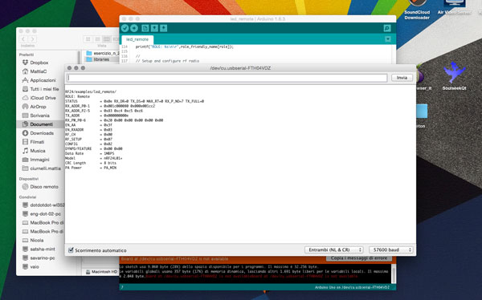

For this week we have to design and build a wired and/or wireless network connecting at least two processors.
Given the need for my final project to communicate 2 devices located in different places, I decided to start testing some type wireless communication.
Looking on the internet I found a possible option: the nRF24L01 module. These modules are radio frequency transceiver to 2.4Ghz (the same as WiFi) really very cheap: they do not offer the same advanced features of the wifi, but are suitable for my needs.
The advantages of this module are:
Between all the libraries I've tested (Mirf - MySensors NRF24L01 Arduino Library - RadioHead Packet Radio Library) the most complete and easy to use is the RF24.
This library, as well as being well documented, there are a number of examples to better understand the operation of the module nRF24L01.
First of all, we have to connect the nRF24 to our microcontroller boar, following this schematic:
nRF24L01 pin ----> Microcontroller pin
*CE and CSN pin are defined by software.
** Pin 8 IRQ is unused by most software, but the RF24 library has an example that utilizes it.
to use this module of course we will need a current regulator to be able to properly power to 3.3 V.
The first test we can do is upload the sketch "GettingStarted" library RF24 on both microcontrollers that we want to communicate, defining the roles of each in the same sketch. This is a very basic example of how to send data from one node to another.
Set role = 0 in one microcontroller
and set role = 1 in the other
Once loaded the sketch in two microcontrollers, we start the serial monitor and we should see, depending on which microcontroller is connected to the PC, the bits that are transmitted or received.
here the two screens (transmitter and receiver) compared
Another example in the library, it can give you a visual idea of wireless communication, is "LedRemote".
This is an example of how to use the RF24 class to control a remote bank of LED's using buttons on a remote control. On the 'remote', connect any number of buttons or switches from a microcontroller pin to ground. Update 'button_pins' to reflect the pins used.
On the 'led' board, connect the same number of LED's from an microcontroller pin to a resistor to ground. Update 'led_pins' to reflect the pins used.
Also connect a separate pin to ground and change the 'role_pin'. This tells the sketch it's running on the LED board.
Every time the buttons change on the remote, the entire state of buttons is send to the led board, which displays the state.
Once loaded the scketch, always open the serial monitor and control the transmission of data. This is the start-up message

and these ones when sending data (ie the pressure of a button)
This is a video while the 2 micro are working: